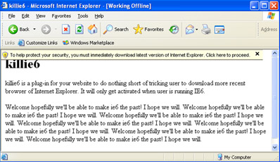

Everyone keeps talking about Chrome these days and how great it is. I checked it out and I loved it too. But why don't developers keep talking about Internet Explorer 6? USA Today the other day had a huge article on Internet Explorer 8. But why didn't they try to explain to readers why IE6 should be abandoned? That is what is frustrating.
And I am convinced I am not alone wondering about when we (developers) will stop creating separate stylesheets for IE6 and forget it as a nightmare.
Well I couldn't wait any longer. I created a tiny plug-in, that I will run on my and my customers websites to promote newer browsers and get rid/kill IE6. I named my plug-in 'killie6'
So what exactly does this plug-in do?
This plug-in detects if website visitor is using IE6. Then it waits few seconds and pops up a yellow horizontal bar across the browser on top. Users of IE are very familiar with this horizontal line, they've seen it hundreds of times. This horizontal message bar usually alerts visitors of unknown plug-ins, applets or pop-up windows. To display them, user has to click on this bar and confirm that s/he wants to see it.
Thus, this is where my idea comes into play. I style my own bar identically and display a message that looks like Microsoft's official message that says "To help protect your security, you must immediately download latest version of Internet Explorer. Click here to proceed". Message on the bar is customizable, web site developer can write on it whatever desired. In addition web developer can assign click URL to be whatever desired as well. I went conservative and forward users to official Microsoft website for downloading latest available version of Internet Explorer.
For more information or to download, check out official killie6 sourceforge project page.
Archived comments
Another resource battling ie6
— AnonymousAnother resource battling ie6: http://www.bringdownie6.com/
Nice banners for IE6 users
— iluvIE6Nice banners for IE6 users:
http://blog.hugsformonsters.com/post/87657240/overly-judgemental-ie6-spl...
Somebody even registered
— f1vladSomebody even registered domain: http://www.killie6.com/
Great news from Norway!
— Anonymoushttp://www.cjohansen.no/en/browsers/norway_tells_ie6_users_to_shape_up
Improvements
— f1vladLatest news on killie6:
A list of modern browsers (IE6 alternatives)
Having started discussion at
— f1vladHaving started discussion at linkedin made me reconsider using Microsoft style plug-in. I will redo the user interface to not mimic IE alert.
That discussion also genereted a couple of very cool links to the websites I haven't heard about:
Live demo
— f1vladLive public _crossbrowser_ demo: http://pastebin.me/48c6a3abcd265